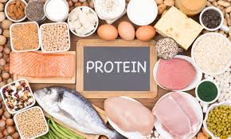

Balanced nutrition is essential for maintaining a healthy body and mind. It involves consuming a variety of foods in the right proportions to provide the necessary nutrients your body needs to function effectively.
Nutrition is not just about what you eat, but also how much you eat. A well-balanced diet provides the right amount of carbohydrates, proteins, fats, vitamins, and minerals. Each of these nutrients plays a vital role in supporting bodily functions.
Carbohydrates are the body’s main source of energy. They are found in foods like bread, pasta, fruits, and vegetables. Consuming the right amount of carbohydrates ensures that your body has enough energy for daily activities and exercise. However, it’s important to choose complex carbohydrates, such as whole grains, over simple sugars to maintain stable blood sugar levels.
Proteins are essential for building and repairing tissues. They are made up of amino acids, some of which are essential, meaning the body cannot produce them. Good sources of protein include meat, fish, eggs, dairy products, legumes, and nuts. Incorporating a variety of protein sources in your diet can help ensure that you receive all essential amino acids.
Fats are often misunderstood. While it’s important to limit saturated and trans fats, healthy fats found in avocados, nuts, seeds, and olive oil are beneficial for heart health. Fats help absorb vitamins, provide energy, and are crucial for brain function. Striking a balance between different types of fats is key to a healthy diet.
Vitamins and minerals are micronutrients that support various bodily functions. They help strengthen the immune system, improve bone health, and enhance energy production. Fruits and vegetables are excellent sources of vitamins and minerals, and incorporating a colorful variety can help ensure you meet your nutritional needs.
Hydration is another critical aspect of nutrition. Water supports digestion, nutrient absorption, and temperature regulation. It is essential to drink enough water throughout the day, especially when engaging in physical activity. Aim for at least eight 8-ounce glasses of water daily, adjusting for activity level and climate.
In addition to choosing the right foods, mindful eating practices can enhance your nutritional habits. This involves paying attention to your hunger cues, savoring your food, and eating without distractions. Mindful eating can lead to better digestion, improved satisfaction with meals, and a healthier relationship with food.
In conclusion, balanced nutrition is not just essential; it is vital for overall health and well-being. By incorporating a diverse range of foods into your daily diet and being mindful of your nutritional choices, you can effectively support your body's needs and promote long-term wellness. Each food group plays a unique role in maintaining optimal health, and understanding this can empower you to make informed decisions. Remember, even small changes in your eating habits can lead to significant improvements in your health over time. Start today to create a healthier future for yourself!